Drei Musiker gründeten 1996 in Memphis die US-amerikanische christliche Rockband Skillet. John Cooper, Ken Steorts und Trey McClurkin machten von da an gemeinsam Musik. Das Spektrum ist bei Skillet breit gefächert. Ihre Musik reicht von Elektro über Industrial Rock bis hin zu Christlichem Rock. Beeinflusst wurde die Band von der Gruppe Fold Zandura. Von den Gründungsmitgliedern ist heute nur noch Sänger, Bassist, Keyboarder und Schlagzeuger John Cooper dabei. Aktuell gehören daneben Keyboarder, Rhythmusgitarrist und Bassist Korey Cooper, Leadgitarrist Seth Morrison sowie Schlagzeugerin und Sängerin Jen Ledger dazu.
Bis 2017 haben Skillet insgesamt neun Studioalben veröffentlicht. Den Anfang machte 1996 das gleichnamige Werk "Skillet". Bis zum dritten Album blieb die Besetzung der Band gleich. Dann verließ zuerst Trey McClurkin die Gruppe. Ersetzt wurde er zuerst durch Lori Peters und später durch Jen Ledger. Letztere setze sich nicht nur ans Schlagzeug, sondern sang auch. Zu hören ist sie unter anderem im Song "Hero". Für Kevin Haaland, der 2001 die Band verlies, kam Ben Kasica. 2009 feierte das fünfte Album "Awake" seinen großen Erfolg: Es landete auf Platz zwei der amerikanischen Albumverkaufscharts.
Die Songs "Hero" und "Monster" wurden im gleichen Jahr als Titellieder bei WWE Pay-Per-Views genutzt. Kasica verließ zehn Jahre später Skillet und widmete sich anderen Projekten. Sein Ersatzmann war Seth Morrison, der fortan die Lead-Gitarre übernahm. 2017 kam der Titel "Feel Invincible" bei einer Übertragung des amerikanischen Counter-Strike: Global Offensive Liga ELEAGUE zum Einsatz.
| Cover | Titel | Erscheinungsjahr |
|---|---|---|
| 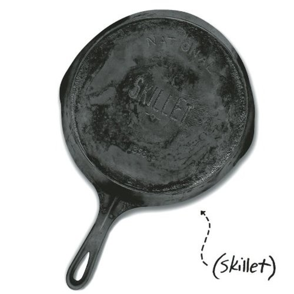 | Skillet | 1996 |
| 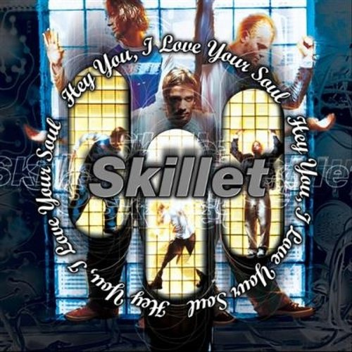 | Hey You, I Love Your Soul | 1998 |
| 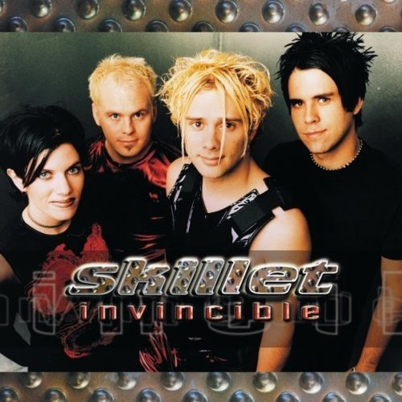 | Invincible | 2000 |
| 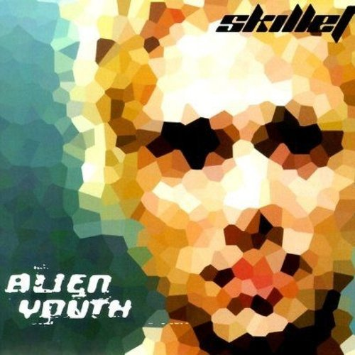 | Alien Youth | 2001 |
| 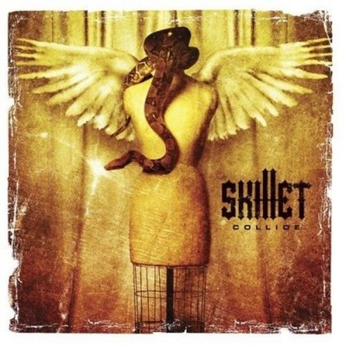 | Collide | 2003 |
| 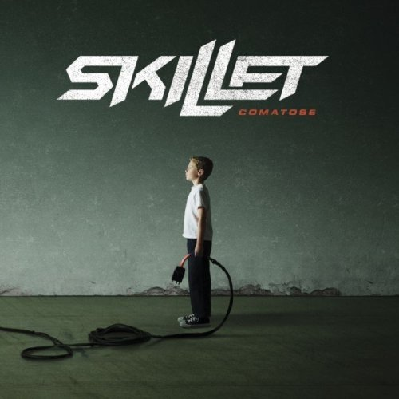 | Comatose | 2006 |
| 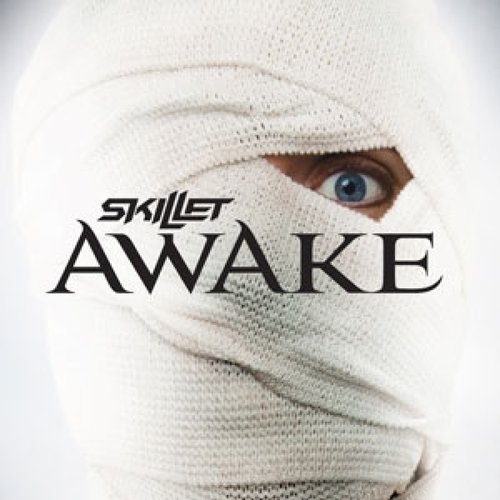 | Awake | 2009 |
| 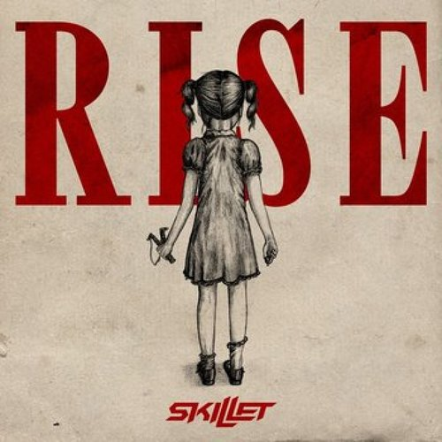 | Rise | 2013 |
| 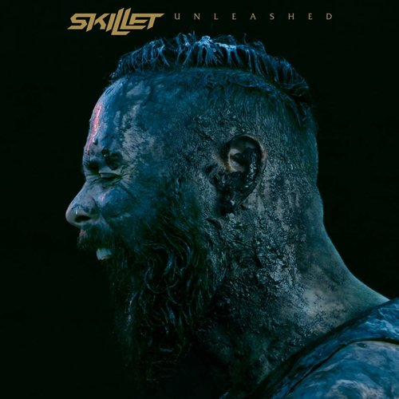 | Unleashed | 2016 |
| 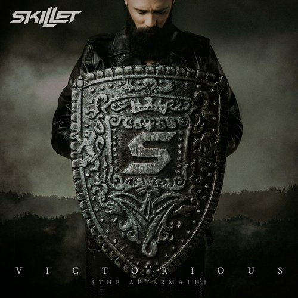 | Victorious | 2019 |
|
|
Dominion | 2022 |
| 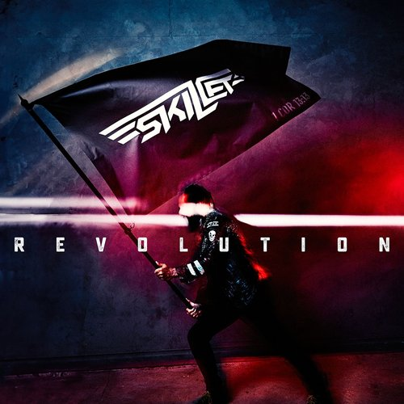 | Revolution | 2024 |
Seite erstellt von Tirza Fischer